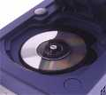
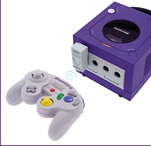

Las patentes de software sólo benefician a las grandes empresas. |
 |
|
|
|
Nintendo 64 Game Boy N. GAMECUBE Game Boy Advance |
|
|
|
Playstation Playstation 2 |
|
|
| Dreamcast |
|
Juegos de Moda |
|
Pokém. Snap(N64) RE Code Vero. (DC) S.Smash Bros (N64) Power Stone 2 (DC) Zelda:M.'s M. (N64) Phantasy S.O. (DC) F. Fantasy IX (PS) Sonic Adv. 2 (DC) Pokémon St. (N64) |
|
Otras Secciones |
|
Colaboraciones Actualizaciones Ant. Noticias Ant. Encuestas Ant. |
|
E-Mail
|
- Los Mini-Dvd's -
- Módem -
- Gamecube y Game Boy Advance -
- Mando inalámbrico -
Pag. Principal
Serán unos discos ópticos fabricados exclusivamente para Nintendo por Matsushita, de 8cm
de diametro y con la increible capacidad de 1,5 GB. Gracias a estos tipos de discos, los programadores tendran
"infinito" espacio para programar sus juegos a la vez que gran potencia y sin pirateria. Al tener discos exclusivos,
no se pueden copiar, pues no lo acepta ningún lector que no sea de la Gamecube. Además, si se consiguiera,
donde se iba a almacenar 1,5 GB. ¿En un CD?, imposible, máximo 650 MB o poco más. Y borrando datos irrelevantes
para hacerlo caber, como en Dreamcast, no creo que sea posible, pues en DC estabamos hablando de 1 GB y no 1,5 GB, que es
a mi parecer demasiado como para comprimirlo en 650 MB (1 GB = 1024 MB).


El módem de Gamecube será de 56k V.90 dial-up (el módem de
Dreamcast, por ejemplo, va 33,6K aprox., que era el utilizado hace unos añitos). El 56K V.90 dial-up se puede decir que es el más potente que se puede encontrar
en cuanto a módems domésticos, aunque ya estan del todo establecidos en el mercado. No vendrá de primeras
con el pack de la consola, con lo cual quien quiera internet se puede comprar el módem y quien no lo quiera, pues no tiene porque pagar de antemano un
precio ya aumentado por un producto que no va a utilizar. En cuanto a posibilidades on-line, se podrá, por supuesto, jugar por internet, además de
mandar emails, chatear, dejar tus records en la web y muchos servicios que Nintendo esta dispuesto a poner a disposición del usuario,
por lo que las posibilidades serán amplísimas. No se sabe aún el precio, pero no creo que sea muy caro, y más ahora que los
precios de los módems estan bastante asequibles.


Especificaciones Técnicas
Diseño
Periféricos
dimensiones
Los primeros Juegos
come.to/videojuegos
videojuegos.come.to